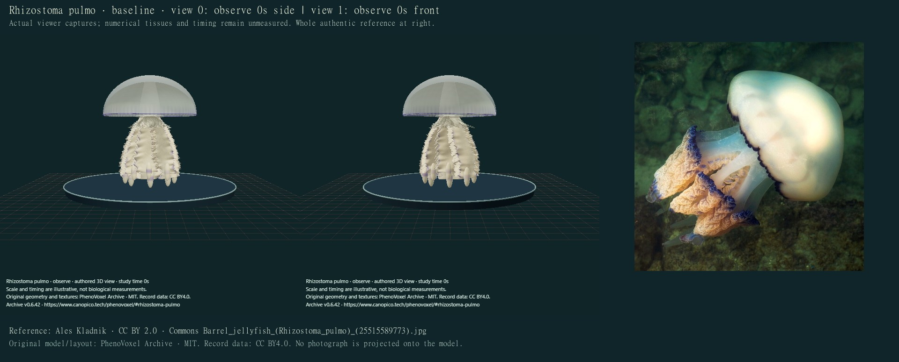
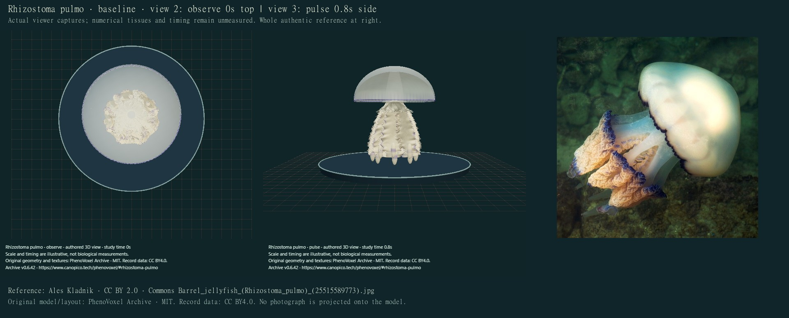
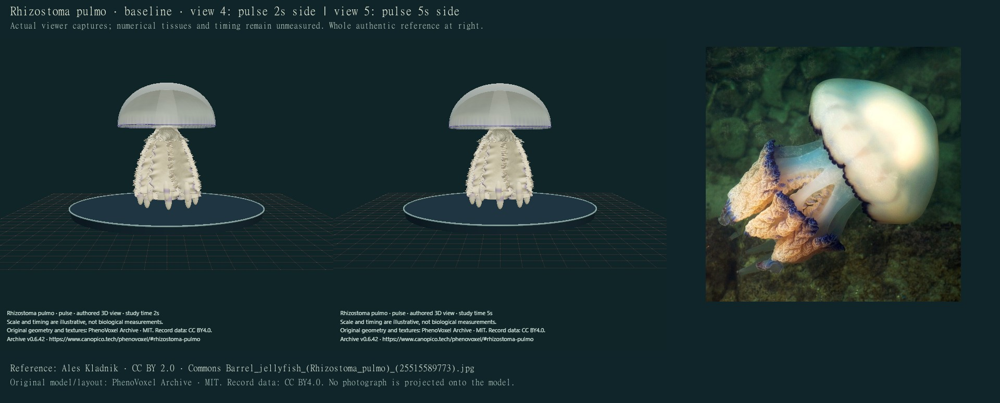
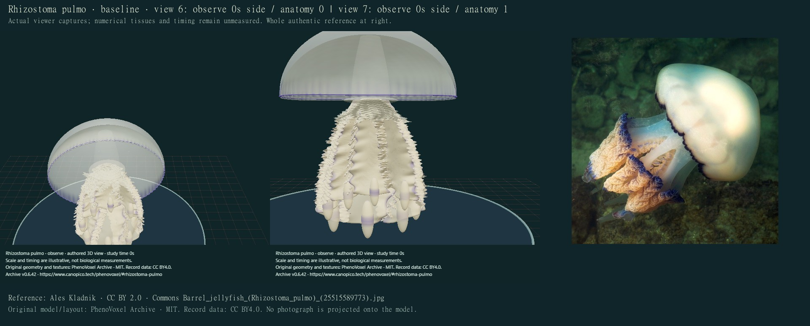
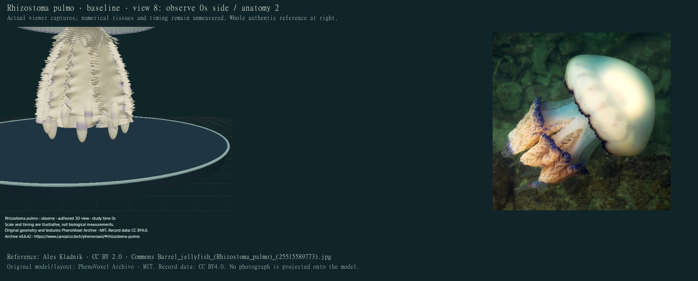
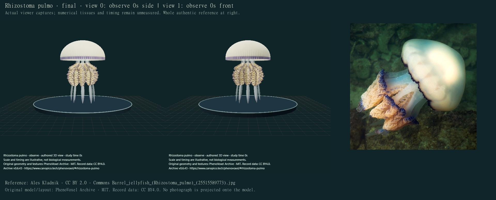
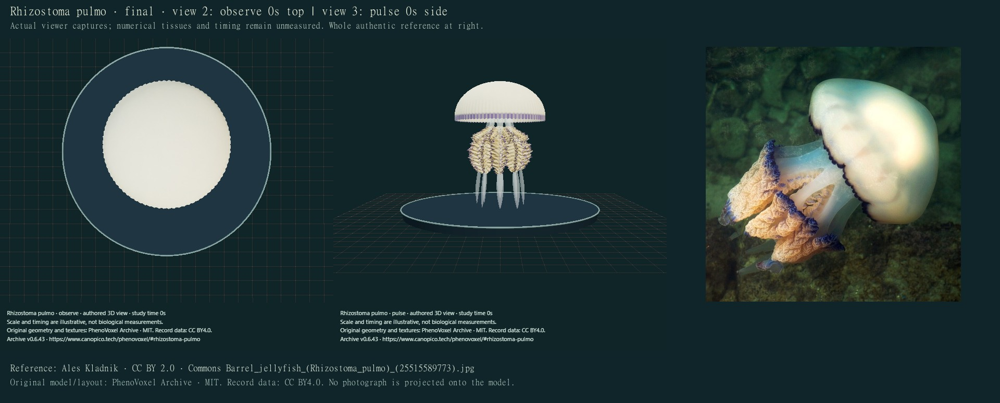
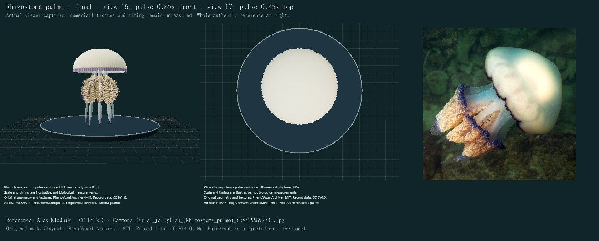
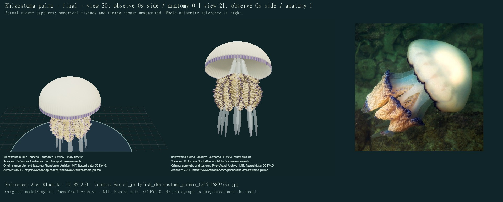
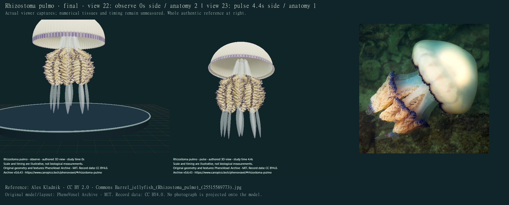

Open Rhizostoma · Previous Cotylorhiza correction · Initial jellyfish pass
Version 0.6.43 · October 27, 2026 Bangkok · one existing species, zero additions. This correction separates the oral tissues, elongated terminal clubs and bell margin and gives them a bounded local movement study on the same model.
Selected wing/scapulet pieces overlap rather than form fused tissue with mouthlet and canal lumens. Ruffles, central unions, lappet rhythm, club profiles and optical response remain stylized or unmeasured. No full propulsion, muscle mechanics, feeding, flow/contact forces or physiological simulation. Repeated numerical ruffles, selected narrow wing profiles, simplified scapulet unions and terminal clubs still differ from natural individuals. Tissue thickness, natural variation, optical scattering, proportions and timing are not measured. Final captures use software compatibility rendering; final WebGL optics are not verified. No photorealism, independent specialist certification or accuracy percentage is claimed.
Avian et al.2022 describes the species’ complex oral-arm anatomy. The actual complete S1A/B adult photographs from the Gulf of Trieste show the broad frilled regions, three-winged oral arms and elongated terminal clubs. Selected anatomy text and captions were read. The internal Figure2 CT resin endocast was inspected separately: it is not an external living-body mesh or organism photograph. No internal cast is projected onto this model.
Each selected oral arm has two outward wings and one inward wing, with separate paired upper scapulets. The publication distinguishes age-dependent canal architecture and apparent versus real bell diameter. Neither source dimensions nor internal canal branches are treated as universal exterior measurements. The authors describe adaptive convergence, not a traditional through-gut. This viewer does not simulate that circulation.
S1B credits Paolo Coretti. Its separate creator/grant scopes remain unreconciled for public reuse, so paper figures are linked and kept private. The whole retained openly licensed profile photograph supplies the public comparison below. Historical North Sea descriptions may encompass R. octopus; that account cannot independently determine a Mediterranean photograph. The existing accepted GBIF species identity5185453 and all identity/taxonomy fields are preserved, without a new specimen redetermination.
The old narrow conical skirt, repeated combs, short opaque clubs and thin torus-like rim did not convey the distinct tissues. These are actual previous production captures.





24 final compiled main-viewer states were individually inspected on12credited sheets. Display scale and seconds are illustrative. Software compatibility lighting cannot establish live-tissue scattering/refraction or final WebGL appearance. Anatomical close-ups include a context zoom-out.





| Area | Correction | Remaining issue |
|---|---|---|
| Oral anatomy | Eight three-winged oral regions with smaller ruffled surfaces and sixteen distinct upper scapulets. | Numerical repeats, simplified unions and external overlaps; no fused histology, complete mouthlet or canal-lumen reconstruction. |
| Terminal clubs | Longer selected tapered translucent appendages continuous in position with the oral regions. | Unmeasured shape, profile, attachment and optics; no internal terminal-club canal or mechanical solution. |
| Body surface | Original attached cream/gold/violet pigment and closed ruffled surfaces; thick bell with a narrower selected violet lappet edge. | Natural irregular folds, mottling, tissue thickness and scattering remain partly stylized. No photograph is painted onto the mesh. |
| Movement | Finite eight-second distal bell flexion and delayed oral/club deformation, recovery and neutral hold on the same surfaces. | Authored amplitudes and rhythm; no full swimming, propulsion, muscle mechanics, feeding, pressure, flow/contact forces or physiology. |
Earlier drafts were rejected for stiff narrow oral plates, comb-like regular folds, a broad violet bell stripe and needle-like clubs. The accepted correction retains visible limitations and does not establish photorealism. All296full local software checks passed. Checks cover closed noncollapsed exteriors, provenance/identity, bounded same-surface motion, stable root, attached pigment and exact reset. They do not validate biomechanics or full self-collision freedom.
Machine-readable findings and capture ledger · Movement/development implementation inventory. Other jellyfish and broader quality/mechanism requests remain unfinished.